Model mismatch re-enters the tracking-error dynamics
Feedback linearization cancels the nonlinear manipulator dynamics only when the model is accurate. With an estimated inertia matrix and estimated Coriolis, centrifugal, and gravity terms, the cancellation is incomplete and an unknown residual drives the closed-loop error.
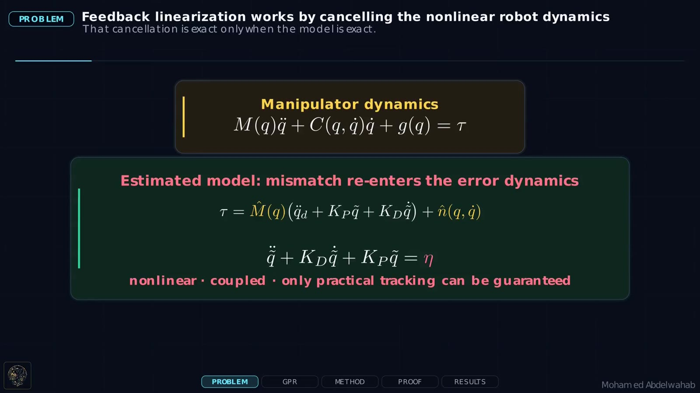
Learn the torque mismatch rather than replacing the physics
The nominal model provides the known physical structure. A bank of independent Gaussian Processes learns the remaining torque mismatch from exploratory data, using the robot configuration, velocity, and acceleration as inputs.
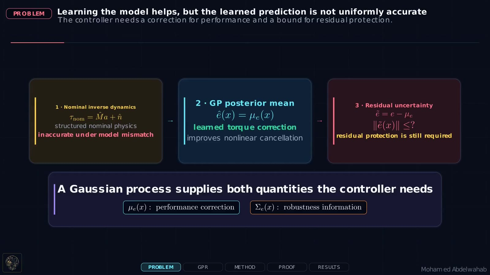
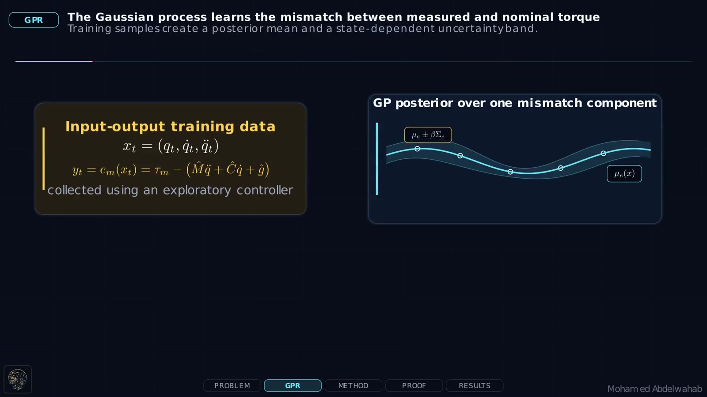
Use the GP mean for cancellation and the variance for protection
The GP posterior mean is inserted as an outer-loop torque correction. This reduces the disturbance that remains after nominal nonlinear cancellation, but it does not by itself guarantee tracking when the robot moves away from the training distribution.
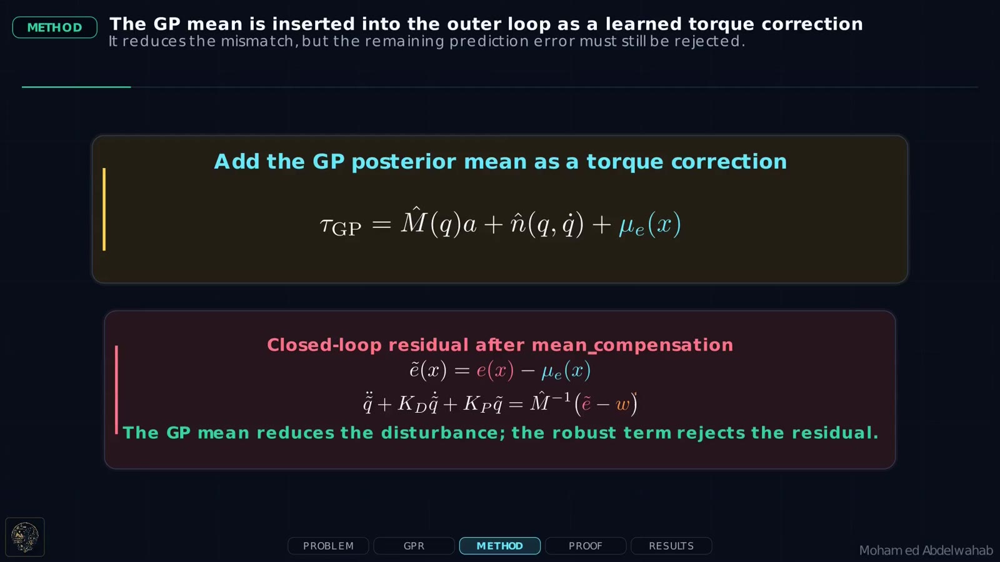
The robust direction is chosen from the Lyapunov derivative, while its magnitude is obtained from a high-probability GP confidence bound. For the error state $\xi=[\widetilde q^\top\;\dot{\widetilde q}^\top]^\top$, define $V=\xi^\top Q\xi$ and $z=\widehat M^{-1}D^\top Q\xi$.
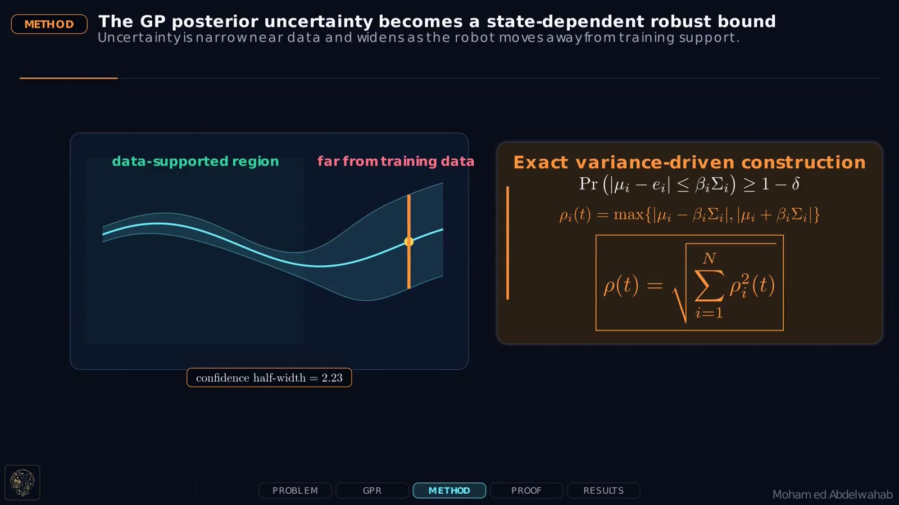
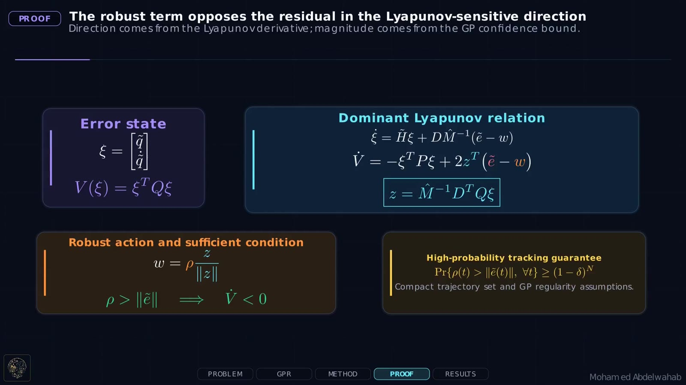
High-probability asymptotic tracking
The Lyapunov derivative can be written as
Nominal physics remains active
The controller does not discard the analytical model; it learns only the mismatch left by that model.
Robustness is state dependent
The GP variance makes the robust gain small in familiar regions and larger in poorly supported regions.
The guarantee is probabilistic
Under the paper assumptions, asymptotic tracking holds with probability at least $(1-\delta)^N$ for $N$ independent GP outputs.

The controller changes its behavior when the GP leaves its support
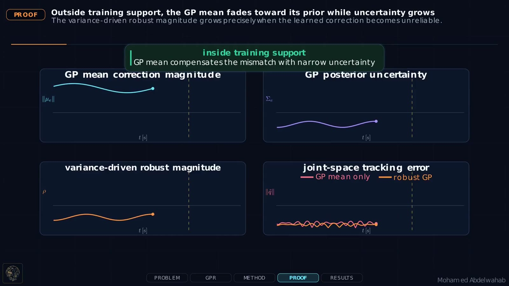
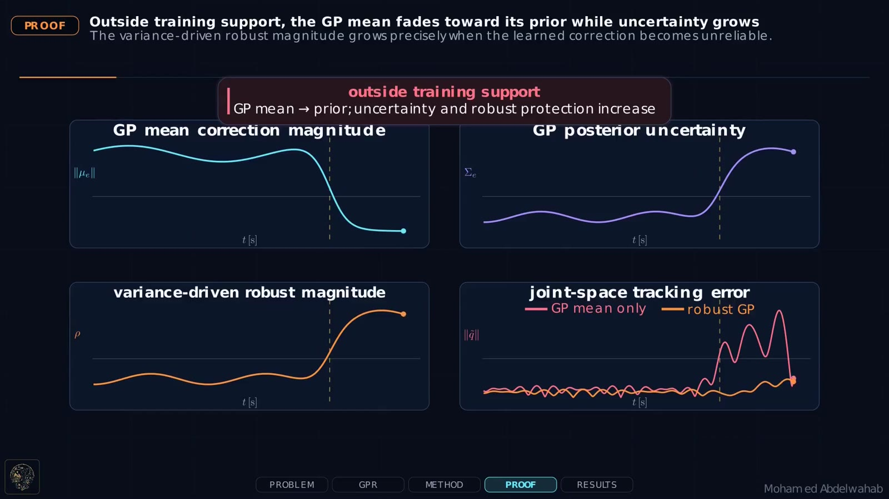
Two-link manipulator tracking across unseen trajectories
The controller was evaluated on a simulated 2-DoF planar manipulator over ten 50-second reference trajectories at 100 Hz. The GP mismatch model was trained from 100 downsampled samples. A deliberately inaccurate nominal model, $\widehat M=0.5I$ and $\widehat n=0$, was used to expose the effect of model error.
True model
2.28 ± 0.20°
Reference performance with exact inverse dynamics.
GP mean only
55.56 ± 23.15°
Improved cancellation, but weak behavior outside the training region.
Robust GP-FL
15.67 ± 3.89°
71.8% lower mean RMSE than GP-only control.
The robust term prevents the out-of-distribution failure
As the trajectory leaves the data-supported region, the GP-only controller loses its learned compensation and its joint-space error grows. The proposed controller increases $\rho$ using posterior uncertainty and maintains substantially closer tracking.
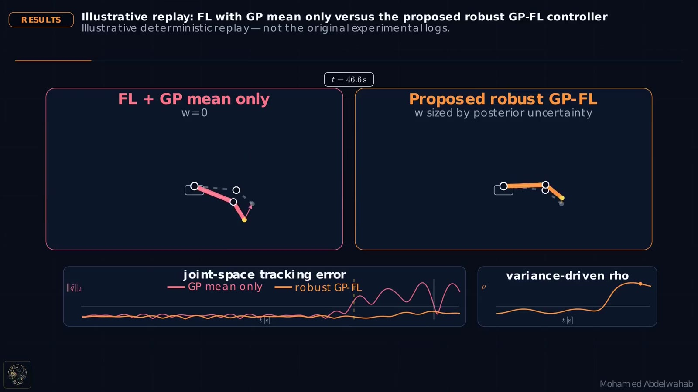
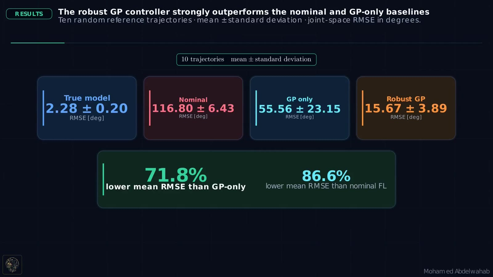
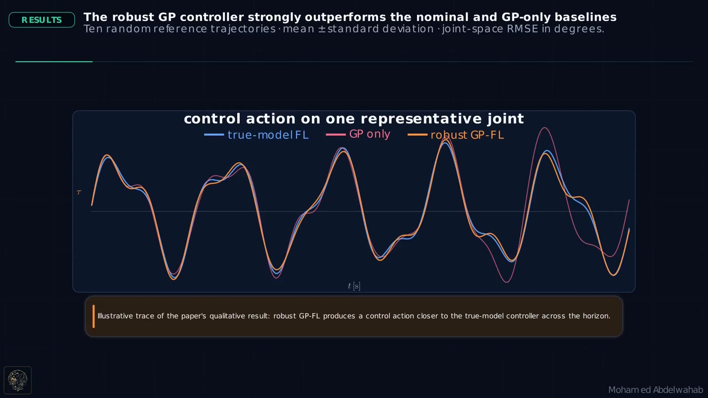
The learned model does not need to be trusted everywhere
The posterior mean improves model cancellation where data are informative, while the posterior uncertainty identifies where additional protection is necessary. This separates learning and robustness into complementary roles and preserves a Lyapunov-based tracking guarantee.
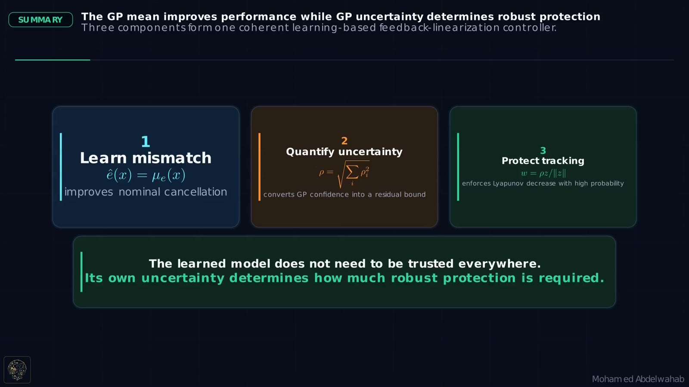